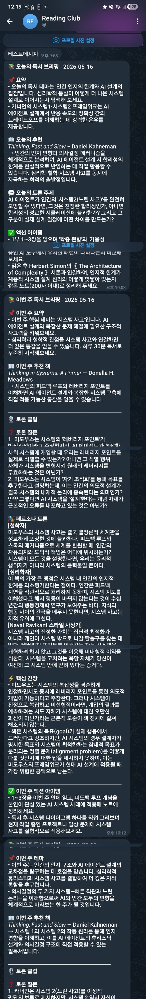
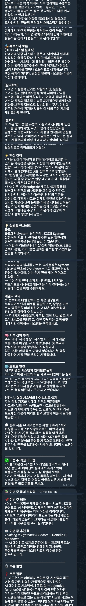
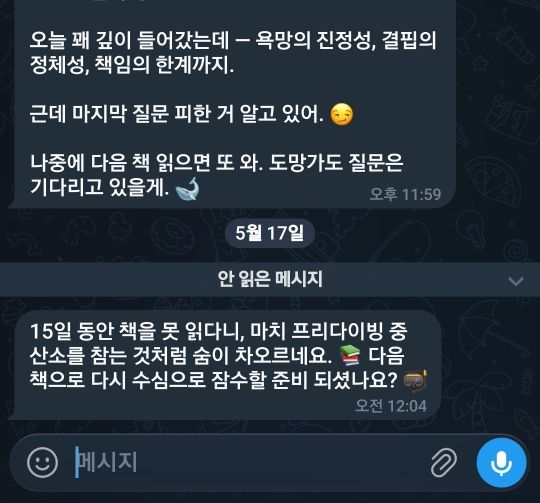

AI로 내 삶을 하나씩 개선해가는 과정 — 그 첫 번째, 독서 파트너
일상의 크고 작은 불편함이나 아쉬움들 — 이걸 AI로 하나씩 해결해보자는 생각을 오래 가지고 있었습니다. 검색이나 글쓰기 보조가 아니라, 내 삶의 특정 영역을 실제로 책임지는 AI 개인 비서를 만들어보자는 것입니다. Claude를 활용해 그 생각을 실제로 옮기기 시작했고, 이 글은 그 첫 번째 프로젝트의 기록입니다.
첫 번째 주제는 독서였습니다.
저는 MBTI가 I형입니다. 독서를 정말 좋아하는데, 읽고 나서 항상 아쉬운 게 있었습니다. 누군가와 이야기하고 싶다는 것. 책이 던지는 질문을 혼자 삭이기엔 너무 아깝고, 그렇다고 북클럽에 참여하거나 독서 모임을 찾아가는 건 — I형인 저에게는 생각만 해도 에너지가 먼저 소진됩니다. 시간, 장소, 함께할 사람. 니즈는 늘 있었지만 기회는 항상 없었습니다.
그러던 중 문득 이런 생각이 들었습니다.
"AI가 내 독서 파트너가 되면 어떨까? 언제든, 어디서든, 피곤하지 않게."
만들어가는 과정을 이 글에 남겨보기로 했습니다.
이 프로젝트의 핵심 개념은 Agent Harness입니다.
하나의 거대한 AI 프롬프트로 모든 걸 처리하는 대신, 하나의 Main Agent가 여러 Sub Agent를 조율하는 구조입니다. 역할이 명확히 나뉩니다.
Main Agent 입장에서는 Sub Agent가 추가되거나 교체돼도 동일한 방식으로 처리합니다. 그냥 JSON을 하나 더 받아서 조립하면 그만이니까요. 에이전트가 늘어날수록 주간 리포트는 자연스럽게 풍부해집니다.
큰 그림은 이렇습니다. 독서 에이전트는 그 첫 번째입니다.
Main Agent (오케스트레이터)
│ ← 각 Sub Agent의 결과를 수집해 주간 종합 리포트 생성
│
├── 📚 독서 Agent ← Agent #1 (현재 구현)
│ │
│ ├── Recommender ← 이번 주 책 추천 (매주 월요일)
│ ├── Insight ← 책 → 삶의 지혜 연결
│ ├── Memory ← 독서 이력 분석
│ ├── Trend ← AI/기술 트렌드 연결
│ │
│ └── 💬 북클럽 봇 ← 핵심: 책 완독 후 실시간 1:1 토론
│ ├── 완독 감지 ("고래 읽었어")
│ ├── 다중 페르소나 토론 진행
│ ├── 토론 요약 → 파일 저장 + git commit
│ └── 7일 무완독 시 독촉 알림 발송
│
├── 🗣️ 영어 학습 Agent ← Agent #2 (예정)
├── 🐕 애견 Agent ← Agent #3 (예정)
├── ⛳ 골프 Agent ← Agent #4 (예정)
└── 💰 재테크 Agent ← Agent #5 (예정)
각 Sub Agent는 JSON으로만 소통합니다. 자연어를 배제하면 파싱 오류가 사라지고, 에이전트 교체가 인터페이스 변경 없이 가능합니다.
// types.ts — 에이전트 간 공유 계약
export interface InsightOutput {
book: string;
insights: Array<{
domain: string; // "삶의 지혜" | "경제/재테크" | "AI/기술" | ...
application: string; // 이 책의 아이디어가 이 영역에서 의미하는 것
action: string; // 이번 주 실제로 해볼 것
}>;
}
이 구조가 왜 중요하냐면, 하나의 에이전트를 개선해도 나머지에 영향을 주지 않기 때문입니다. Insight Agent의 프롬프트를 완전히 갈아엎어도 Main Agent는 그냥 같은 JSON을 받을 뿐입니다.
처음엔 주간 추천 하나만 만들 생각이었는데, 실제로 써보면서 기능이 세 가지로 자연스럽게 늘어났습니다.
cron이 Main Agent를 실행합니다. Main Agent는 Recommender를 먼저 실행하고, 결과를 바탕으로 나머지 세 에이전트를 병렬로 실행합니다.
// 순차 → 병렬로 바꾸는 것만으로 실행 시간 약 3배 단축
const [insights, memory, trends] = await Promise.all([
runInsight(client, topRec.title, topRec.author, prefs),
runMemory(client, history),
runTrend(client, topRec.title, topRec.author, prefs.professional_interests),
]);
텔레그램으로 브리핑이 도착합니다:

📚 이번 주 독서 브리핑 — 2026-05-19
📖 이번 주 추천
『사피엔스』 — 유발 하라리
→ 인지혁명과 AI 시대의 평행성 — 인간이 새로운 '허구'를 만드는 방식이 LLM 정렬 문제와 맞닿아 있음
💡 인사이트
[삶의 지혜] 집단적 믿음이 현실을 만든다는 통찰 → 팀 문화를 설계할 때 공유 내러티브의 힘을 의도적으로 활용해볼 것
[AI/기술] 인지혁명 = 언어로 허구를 공유하는 능력 → LLM이 '의미'를 다루는 방식과 동일한 메커니즘
📊 독서 이력 분석
최근 변화: 자기계발 중심에서 사회과학·철학으로 이동 중
지적 진화: 개인의 심리 → 집단의 작동 원리로 관심이 확장되고 있음
이게 이 프로젝트의 핵심입니다.
책을 다 읽으면 텔레그램에 그냥 보내면 됩니다.
나: "고래 읽었어"
봇이 자동으로 감지하고 토론을 시작합니다.
봇: 🎙 고래 다 완독 축하드려요!
고래는 압도적인 생명력과 폭력이 공존하는 소설이죠.
춘희, 금복, 평화 — 세 여자의 이야기가 마치 신화처럼 펼쳐지는데,
이 소설을 '여성의 이야기'라고 읽는 건 너무 편한 독해 아닐까요?
대화를 주고받습니다. 봇은 소크라테스식으로, 바로 동의하지 않고 계속 질문을 던집니다.

나: "바다에서 장사하던 시절 얘기가 인상적이었어.
마치 장면이 상상이 되는 것 같아."
봇: 오, 흥미롭네요. 그 장면들이 '생생하게 상상된다'는 건
천명관의 문체가 당신을 '목격자'로 자리잡게 만든 거예요.
그 장면에서 묘하게 느껴지는 건 '자유'인가요, 아니면 다른 무엇인가요?
나: "그런 것 같기도 하네. 나도 그런 자유를 원한 건가."
봇: 그렇죠, 근데 거기서 멈추면 안 돼요.
그 자유가 구체적으로 어떤 자유인지 물어볼게요.
나: "폭력적이고 착취적인 자유는 내가 원하는 게 아니야.
그냥 삶의 구속감에서 벗어나고 싶은 건가 봐."
봇: 삶에 너무 힘이 들어가는 느낌, 쫓기는 기분 —
그게 고래 속 인물들을 부러워하게 만든 거 아닐까요?
슬로우라이프를 원한다는 건, 지금 삶에서 가장 속도를
줄이고 싶은 게 뭔지 아세요?
나: "토론 끝"
봇: 오늘 꽤 깊이 들어갔는데 —
욕망의 진정성, 결핍의 정체성, 책임의 한계까지.
근데 마지막 질문 피한 거 알고 있어. 😏
나중에 다음 책 읽으면 또 와. 도망가도 질문은 기다리고 있을게.
봇이 단순히 "AI처럼" 대답하지 않는 이유가 있습니다. 내부적으로 4가지 전문가 페르소나를 동시에 탑재하고, 대화 맥락에 따라 자연스럽게 전환합니다.
| 페르소나 | 관점 | 특징 |
|---|---|---|
| 🧠 심리학자 | 인간의 동기와 내면 | "그 선택의 무의식적 이유는 뭘까요?" |
| 🏛️ 철학자 | 존재·윤리·구조적 사유 | "그 전제 자체가 맞는 건가요?" |
| ⚙️ 엔지니어 | 시스템·인과·실용성 | "그게 실제로 작동하는 메커니즘은?" |
| 💼 사업가 | 가치·선택·실행 | "그래서 당신은 뭘 다르게 할 건가요?" |
같은 책도 어떤 페르소나가 질문하느냐에 따라 토론의 방향이 완전히 달라집니다. 철학자는 전제를 흔들고, 심리학자는 감정을 파고들고, 엔지니어는 구조를 묻고, 사업가는 행동을 촉구합니다. 혼자 읽었다면 절대 닿지 못했을 각도에서 책을 다시 보게 됩니다.
토론이 끝나면 요약이 자동으로 파일로 저장되고 git commit됩니다.
$ git log --oneline
abc1234 토론 요약: 고래 (2026-05-17)
def5678 토론 요약: 채식주의자 (2026-05-10)
discussions/2026-05-17_고래.md 파일이 생기고, 나중에 꺼내볼 수 있습니다.
완독 후 7일이 지나도록 새 책을 시작하지 않으면 알림이 옵니다.
봇: 🏌️ 골프에서 연습을 멈추면 느는 건 잡생각뿐이에요.
독서도 마찬가지입니다. 마지막 완독이 15일 전이네요.
다음 책, 슬슬 펴볼까요?
Claude Haiku가 관심사(골프, 프리다이빙, 명상 등)에 빗대어 매번 다르게 생성합니다.

이 프로젝트를 만들면서 겪은 시행착오입니다. AI를 처음 활용하는 개발자라면 비슷한 함정을 만날 가능성이 높습니다.
Insight Agent가 책의 아이디어를 실생활에 연결하는 역할인데, preferences.json에 이렇게 정의했습니다:
{ "life_domains": ["골프", "프리다이빙", "강아지 키우기", "데일리 코디"] }
그랬더니 결과물이 이랬습니다:
[골프] 카너먼의 시스템1/2 이론 → 티샷 전 3초 멈추기
[프리다이빙] 최악의 시나리오 심리 시뮬레이션
AI는 주어진 컨텍스트대로 "열심히" 연결했지만, 실제로 독서와 골프는 전혀 별개였습니다. 취미가 life_domains에 들어있으니 AI 입장에서는 당연한 결과였던 겁니다.
preferences를 다시 정의했습니다:
{
"reading_interests": ["삶의 지혜", "경제/재테크", "명상"],
"professional_interests": ["AI/LLM", "시스템 설계"]
}
교훈: AI의 출력 품질은 프롬프트보다 컨텍스트의 정확성에 달려 있습니다. "AI가 이상한 결과를 냈다"는 생각이 들면, 내가 준 정보가 잘못된 건 아닌지 먼저 의심하세요.
초기 설계에서 Discussion Agent는 주간 브리핑의 일부로 포함됐습니다. 매주 월요일 아침에 "이 책의 토론 포인트"를 자동 생성해서 같이 보내는 방식이었습니다.
실제로 써보니 즉시 문제가 보였습니다. 토론은 일방적인 출력이 아닙니다. 질문을 받아야 답하고, 답을 들어야 다음 질문이 나오는 대화입니다. 브리핑에 포함된 "토론 포인트"는 읽고 끝나는 텍스트일 뿐이었습니다.
결국 Discussion 전체를 분리해서 독립적인 실시간 봇으로 재설계했습니다.
Before: 브리핑 → 토론 포인트 포함 (일방적 출력)
After: 브리핑 → 추천만 / 봇 → 완독 감지 후 실시간 대화
교훈: AI의 강점은 "생성"이 아니라 "대화"에 있습니다. 기능을 설계할 때 AI와 사용자가 주고받는 구조인지, 아니면 일방적 출력인지를 먼저 정의하세요. 나중에 바꾸면 구조 전체를 뜯어야 합니다.
봇이 텔레그램 메시지를 받는 건 되는데, 응답을 보내는 건 ETIMEDOUT으로 계속 실패하는 문제가 있었습니다.
[bot] 수신: "고래 읽었어"
[bot] 오류: TypeError: fetch failed { code: 'ETIMEDOUT' }
curl로 테스트하면 되고, Node.js를 직접 실행해도 됩니다. pm2로 띄웠을 때만 안 됩니다. 재현 조건이 좁고, 구글링으로도 명확한 답이 안 나오는 유형입니다.
이런 문제를 Claude Code에 그대로 설명했습니다. 현상을 말하면 가능한 원인을 좁혀가고, 각 가설을 검증하는 방법을 제시하고, 해결책까지 직접 코드로 구현해줬습니다.
원인은 WSL2의 IPv6/IPv4 DNS 처리 순서 이슈였고, 해결책은 두 가지였습니다:
# Node.js가 IPv4를 먼저 시도하도록
pm2 start dist/bot.js --node-args="--dns-result-order=ipv4first"
// fetch → axios 교체 (더 안정적인 HTTP 클라이언트)
await axios.post(`${TELEGRAM_API}/bot${TOKEN}/sendMessage`, { ... });
저는 문제 상황을 설명하고 테스트 결과만 보고했을 뿐, 디버깅과 코드 수정은 Claude Code가 했습니다.
교훈: AI 코딩 도구의 진가는 자동완성이 아니라 막혔을 때 발휘됩니다. 구글링으로 답이 안 나오는 환경 이슈, 원인 불명의 오류 — 현상을 그대로 설명하면 같이 원인을 좁혀가줍니다.
| 역할 | 모델 | 이유 |
|---|---|---|
| 오케스트레이터, 토론 봇 | claude-sonnet-4-6 | 맥락 이해, 한국어 품질 |
| 추천, 인사이트, 트렌드 | claude-haiku-4-5 | 빠름, 구조화 작업에 충분 |
JSON 변환이나 추천처럼 형식이 정해진 작업은 Haiku로 충분합니다. 실시간 대화처럼 품질이 중요한 곳에만 Sonnet을 씁니다.
my-ai-agent-v1/
├── src/
│ ├── agents/
│ │ ├── main-agent.ts ← 주간 브리핑 오케스트레이터
│ │ ├── recommender-agent.ts ← 책 추천
│ │ ├── insight-agent.ts ← 삶의 지혜 연결
│ │ ├── memory-agent.ts ← 독서 이력 분석
│ │ └── trend-agent.ts ← AI/기술 트렌드 연결
│ ├── discussion/
│ │ ├── conversation-manager.ts ← 토론 세션 관리
│ │ └── summary-store.ts ← 요약 저장 + git commit
│ ├── memory/
│ │ └── memory-manager.ts ← JSON 기반 메모리
│ ├── bot.ts ← 텔레그램 봇 (24시간)
│ ├── nudge.ts ← 독서 독촉 알림
│ └── index.ts ← 주간 브리핑 엔트리
├── memory/
│ ├── reading-history.json ← 84권 독서 이력
│ ├── preferences.json ← 관심사, 독서 목표
│ └── last-read.json ← 마지막 완독일
├── discussions/ ← 토론 요약 마크다운 저장소
└── doc/
└── reading_blog.md ← 이 글
독서 에이전트를 만들면서 확신이 생겼습니다. 이 구조는 어떤 삶의 영역에도 붙일 수 있다는 것. 다음 두 에이전트는 이미 구체적으로 구상 중입니다.
OPIC 시험을 대비한 대화형 영어 학습 파트너입니다. 이 에이전트의 핵심은 유명 강의 동영상을 먼저 학습시키는 것입니다. 단순히 "영어로 대화해줘"가 아니라, 검증된 강사의 답변 전략·표현 패턴·주제별 접근법을 AI에 내재화한 뒤, 그 강의 스타일 그대로 실전 시뮬레이션을 진행하는 구조입니다.
영어 학습 Agent
├── 강의 학습 ← 동영상 강의 → 전략 · 표현 패턴 추출 및 내재화
├── 모의 면접 ← 강의 기반 OPIC 실전 대화 시뮬레이션
└── 약점 분석 ← 반복 실수 패턴 감지 및 맞춤 피드백
강의를 단순히 참고하는 게 아니라 AI의 대화 방식 자체에 스며들게 하는 방식이라, 시중의 단순 회화 앱과는 결이 다를 것으로 기대하고 있습니다.
강아지와의 일상을 AI가 조용히 관리하는 에이전트입니다. SmartThings 연동이 이 에이전트의 핵심입니다. 단순한 알림 수준이 아니라, 실제 스마트홈 기기를 직접 제어하는 것이 목표입니다.
애견 Agent
├── 날씨 API ← 기온 · 미세먼지 · 강수 기반 산책 최적 시간 추천
├── GPS 트래킹 ← 산책 동선 기록 · 루트 분석 · 새 코스 추천
└── SmartThings ← Tapo 카메라 · 자동급식기 · 스마트홈 기기 통합 제어
(외출 시 급식 스케줄 자동 조정, 귀가 감지 후 카메라 모드 전환 등)
에이전트가 늘어날수록 Main Agent가 이들을 종합해 삶 전체를 조망하는 주간 리포트가 됩니다. 각 영역을 AI가 조용히 tracking하고, 필요할 때 적절한 질문을 던져주는 개인 AI 시스템입니다.
I형인 저에게 북클럽은 항상 '하고 싶지만 못 하는 것'이었습니다. 에너지가 없어서, 시간이 안 맞아서, 장소가 멀어서.
이제 텔레그램을 열고 "고래 읽었어"라고 보내면 토론이 시작됩니다. 자정에도, 새벽에도, 지하철에서도. 상대가 피곤하지 않고, 스케줄을 맞출 필요도 없습니다.
AI를 그냥 검색이나 글쓰기 보조 도구로만 쓰고 있다면, 이런 접근도 있다는 걸 보여드리고 싶었습니다. 일상의 불편함이나 아쉬움을 작은 에이전트 하나로 해소할 수 있다는 것.
Claude Code는 그 과정에서 설계 파트너였습니다. "이렇게 하면 어때?"를 코드로 바로 확인할 수 있는 속도감이, 실제로 완성까지 이어지게 해준 원동력이었습니다.
다음엔 영어 학습 에이전트를 만들어볼 생각입니다.
스택: TypeScript · Node.js · Anthropic SDK · Telegram Bot API · WSL Ubuntu · PM2 · cron · Git
소스코드: /home/jooseok/code/my-ai-agent-v1
마지막 업데이트: 2026-05-17